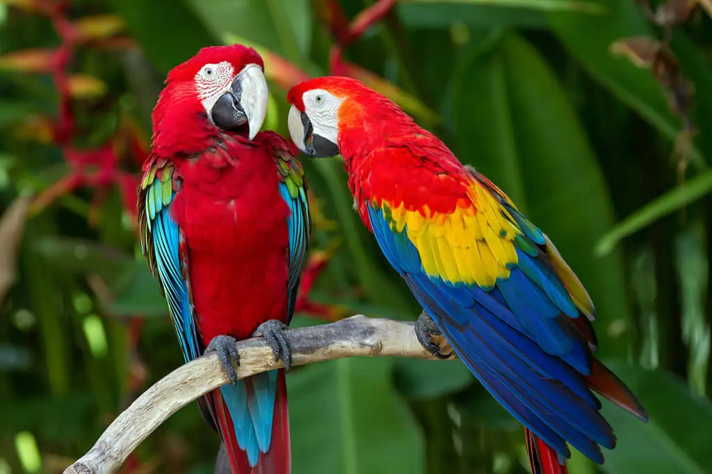

Exercício 2

A arara-vermelha ou arara-vermelha-grande (nome científico: Ara chloropterus)[2] é uma espécie de ave psitaciforme, nativa das florestas do Panamá, Brasil, Paraguai e Argentina. Sua alimentação é baseada em sementes, frutas e coquinhos.
"Araracanga" e "aracanga" vêm do termo tupi arara'kãga.[2] "Arara" vem do tupi a'rara.[3] "Ararapiranga" vem do termo tupi para "arara vermelha".[4] araguai. No Brasil ocorre desde a Amazônia até oeste do Piauí, Bahia, Minas Gerais, Mato Grosso, Mato Grosso do Sul e São Paulo. Assim como a arara-canindé, também vive na cidade de Campo Grande. A observação de bandos de araras vermelhas expandindo e migrando está tornando possível a ocorrência desta espécie na divisa dos estados de Mato Grosso do Sul, São Paulo e Paraná, onde já era considerada extinta.

Ipê-amarelo-flor-de-algodão (Handroanthus serratifolius) é uma espécie de árvore do gênero Handroanthus.[1][2] No Brasil também é conhecida como somente ipê-amarelo, ou então: ipê-amarelo-da-mata, ipê-ovo-de-macuco, ipê-pardo, ipê-tabaco, pau-d’arco-amarelo, piúva-amarela, tamurá-tuíra.[3]
É uma árvore com porte que varia de médio a grande e pode atingir de 15 a 30 metros de altura. Possui o tronco fissurado formando finas placas que se soltam em pequenas quantidades. Suas flores são de cor amarelo-dourado e se formam em cachos. As vagens são bipartidas com comprimento entorno de 35 cm, com coloração marrom-escura, rugosa e sem pelos, que se abrem soltando sementes. As folhas possuem de cinco a quatro folíolos e bordas suavemente serrilhadas. Possui sementes retangulares aladas e germinação simples.[4][5]

A onça-pintada (português brasileiro) ou jaguar (português europeu) (nome científico: Panthera onca), também conhecida como onça-preta (no caso dos indivíduos melânicos), é uma espécie de mamífero carnívoro da família dos felídeos (Felidae) encontrada nas Américas. É o terceiro maior felino do mundo, após o tigre e o leão, e o maior do continente americano. Apesar da semelhança com o leopardo (Panthera pardus), a onça-pintada é evolutivamente mais próxima do leão (Panthera leo).
É um felino de porte grande, com peso variando de 56 a 92 quilos, podendo chegar a 158 quilos, e comprimento variando de 1,12 a 1,85 m sem a cauda, que é relativamente curta. Fisicamente semelhante ao leopardo, dele se diferencia pelo padrão de manchas na pele e pelo maior tamanho. Existem indivíduos totalmente pretos. As onças pintadas possuem mandíbulas excepcionalmente fortes, apresentando as mais poderosas mordidas dentre todos os grandes felinos. Isso permite que ela fure a casca dura de répteis como a tartaruga e de utilizar um método de matar incomum: ela morde diretamente através do crânio da presa entre os ouvidos, uma mordida fatal no cérebro.